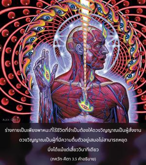
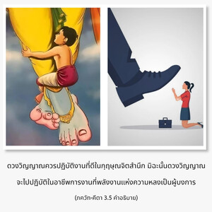
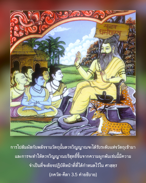

ทุกคนถูกบังคับให้ทำงานตามคุณสมบัติที่ตนได้รับมาจากระดับต่างๆของธรรมชาติวัตถุอย่างช่วยไม่ได้ ดังนั้นจึงไม่มีใครสามารถหยุดการกระทำสิ่งหนึ่งสิ่งใดได้แม้แต่เพียงชั่วครู่



มันไม่ใช่ร่างกายที่มีความกระตือรือร้นอยู่เสมอ แต่เป็นธรรมชาติของดวงวิญญาณต่างหาก หากไม่มีดวงวิญญาภายอยู่ในร่างกายแล้วร่างกายนั้นก็จะไม่สามารถเคลื่อนไหวได้ ร่างกายเป็นเพียงพาหนะที่ไร้ชีวิตที่จำเป็นต้องให้ดวงวิญญาณเป็นผู้สั่งงาน ดวงวิญญาณเป็นผู้ที่มีความตื่นตัวอยู่เสมอ ไม่สามารถหยุดนิ่งได้แม้แต่เสี้ยววินาทีเดียว เมื่อเป็นเช่นนี้ดวงวิญญาณควรปฏิบัติงานที่ดีในกฺฤษฺณจิตสำนึก มิฉะนั้นดวงวิญญาณจะไปปฏิบัติในอาชีพการงานที่พลังงานแห่งความหลงเป็นผู้บงการ การไปสัมผัสกับพลังงานวัตถุนั้นดวงวิญญาณจะได้รับระดับแห่งวัตถุเข้ามา และการจะทำให้ดวงวิญญาณบริสุทธิ์ขึ้นจากความผูกพันเช่นนี้มีความจำเป็นที่จะต้องปฏิบัติหน้าที่ที่ได้กำหนดไว้ใน ศาสฺตฺร หากดวงวิญญาณปฏิบัติหน้าที่ตามธรรมชาติของตนในกฺฤษฺณจิตสำนึก อะไรก็แล้วแต่ที่สามารถทำได้จะเป็นสิ่งที่ดีสำหรับตนเอง ศฺรีมทฺ-ภาควตมฺ (1.5.17) ยืนยันไว้ดังนี้
ตยักตวา สวะ-ธรรมัม จะระณามพุชัม หะเรร
ภะชันน อะปักโว ’ถะ ปะเตต ตะโต ยะทิ
ยะตระ กวะ วาภะทรัม อะภูท อะมุษยะ กิม
โก วารถะ อาปโต ’ภะชะตาม สวะ-ธรรมะตะห์
“หากผู้ใดเริ่มรับเอากฺฤษฺณจิตสำนึกไปปฏิบัติ ถึงแม้ว่าเขาอาจจะไม่ปฏิบัติตามหน้าที่ที่กำหนดไว้ใน ศาสฺตฺร หรือไม่ปฏิบัติการอุทิศตนเสียสละรับใช้อย่างถูกต้อง และแม้ว่าเขาอาจจะตกลงต่ำกว่ามาตรฐาน เขาจะไม่สูญเสียและจะไม่มีความชั่วร้ายใดๆ สำหรับเขา แต่ถ้าหากว่าเขาปฏิบัติตามคำสั่งสอนของ ศาสฺตฺร ทั้งหมดเพื่อความบริสุทธิ์แล้วไม่มีกฺฤษฺณจิตสำนึก เขาจะได้รับประโยชน์อันใด” ดังนั้น วิธีการที่ทำให้บริสุทธิ์จึงมีความจำเป็น เพื่อที่จะมาถึงจุดแห่งกฺฤษฺณจิตสำนึกนี้ ฉะนั้น สนฺนฺยาส หรือวิธีการที่ทำให้บริสุทธิ์อื่นใดก็เพื่อที่จะช่วยให้เราไปถึงจุดมุ่งหมายสูงสุด คือ มีกฺฤษฺณจิตสำนึก ถ้าหากว่าไปไม่ถึงจุดนั้นทุกสิ่งทุกอย่างถือว่าล้มเหลว